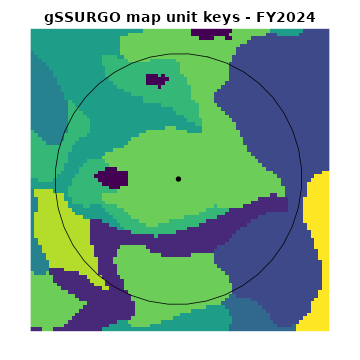
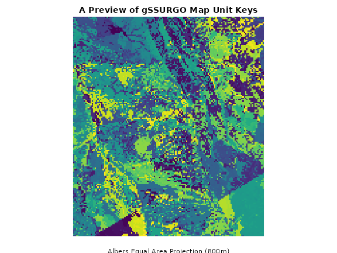
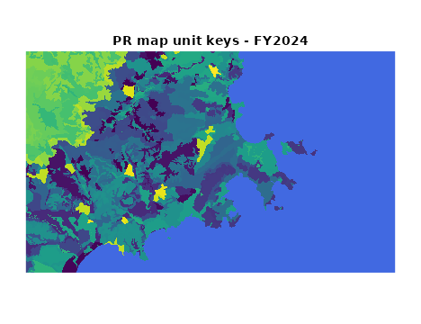
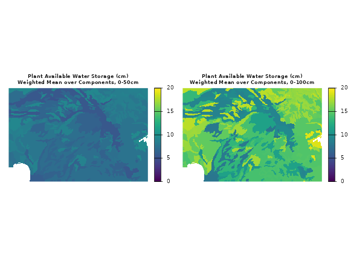
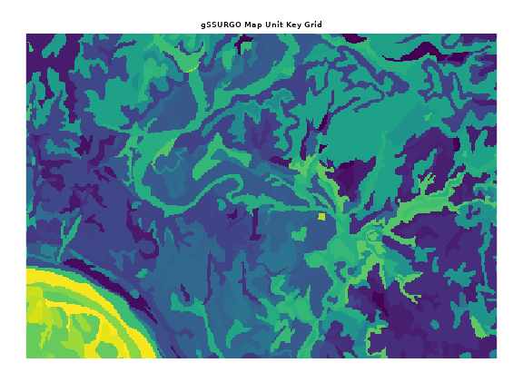
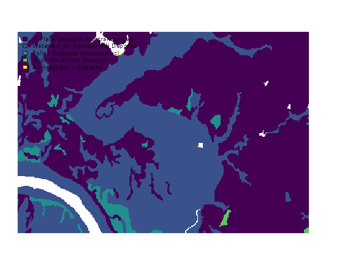
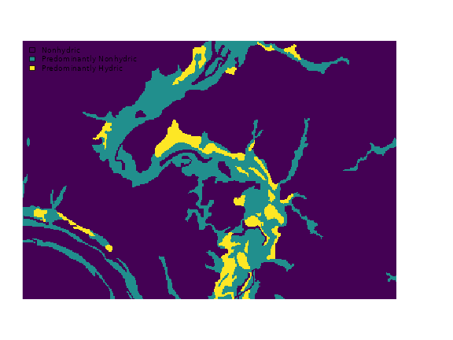
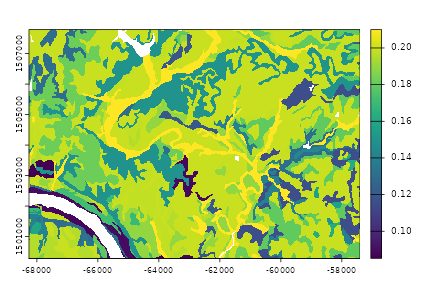
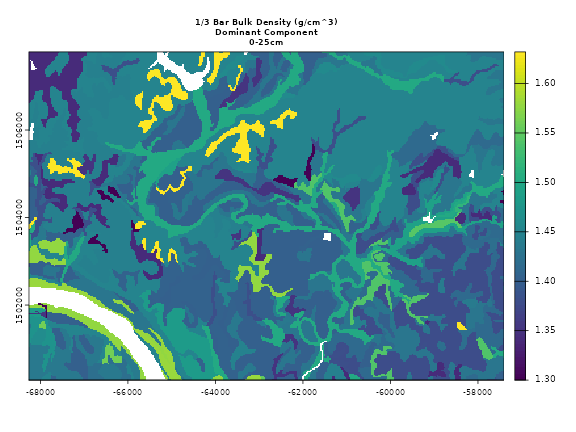

Map Unit Key Grids and Thematic Maps of Soil Survey Geographic (SSURGO) Data
Source:vignettes/wcs-ssurgo.Rmd
wcs-ssurgo.RmdThis vignette will explore how to use the soilDB package to create thematic maps of the Soil Survey Geographic Database (SSURGO) via Soil Data Access (SDA) and SoilWeb coverage services.
Introduction
A web coverage service (WCS) is provided for the gSSURGO and gNATGSO
map unit
key grids by the UCDavis California Soil
Resource Lab SoilWeb server. These grids are a raster representation
of the gSSURGO and gNATSGO map unit keys (mukey) for the
conterminous United States at a resolution of 30m. The GeoTIFF format is
used to ensure maximum compatibility. Cell values are map unit keys,
encoded as unsigned 32-bit integers. The standard spatial reference for
the grids is Albers Equal Area Conic (NAD83) coordinate reference system
("EPSG:5070"). The grids are ‘LZW’ compressed and
internally tiled for efficient random access. The grid topology and cell
values are identical to the rasters contained within the gSSURGO and
gNATSGO File Geodatabases (FGDB).
The files backing each WCS are re-created annually after the SSURGO annual refresh on October 1st. They are typically in-sync with the official version of the data hosted by Soil Data Access by early November. Map unit keys can change over time, especially in soil survey areas that were updated during the last fiscal year.
In addition to the standard CONUS gSSURGO and gNATSGO grids, these web coverage services are also provided:
Raster Soil Survey (RSS) products at 10m resolution (EPSG:5070).
STATSGO2 (2016) at 300m resolution (EPSG:5070).
SSURGO in HI (EPSG:6628) and PR (EPSG:32161) at 30m resolution.
Setup
Get the latest CRAN version of soilDB,
terra and sf for the following examples.
terra is required for handling of raster data.
sf or terra may be used for handling vector
data for as inputs to web coverage service functions, and examples
demonstrate usage of both packages for this purpose. In general for
soilDB functions that take spatial inputs, if
terra objects are used as input, terra objects
are returned.
install.packages(c('soilDB', 'terra', 'sf'))Consider also installing the latest development versions from GitHub or r-universe:
install.packages(c('soilDB', 'terra', 'sf'),
repos = c('https://ncss-tech.r-universe.dev',
'https://rspatial.r-universe.dev',
'https://r-spatial.r-universe.dev')
)Grid Selection
Here are some basic usage examples for the coverage services that can
be accessed with mukey.wcs().
See the mukey.wcs
manual pages for details.
# select gSSURGO grid, 30m resolution
x <- mukey.wcs(aoi = aoi, db = 'gssurgo', ...)
# select gNATSGO grid, 30m resolution
x <- mukey.wcs(aoi = aoi, db = 'gnatsgo', ...)
# select RSS grid, 10m resolution
x <- mukey.wcs(aoi = aoi, db = 'RSS', ...)
# select STATSGO2 grid, 300m resolution
x <- mukey.wcs(aoi = aoi, db = 'statsgo', ...)ISSR800.wcs
is a similar function that makes available a variety of pre-aggregated
800m resolution properties derived from gNATSGO.
# select various ISSR-800 grids, details below
x <- ISSR800.wcs(aoi = aoi, var = 'paws')This is where we will link to a more detailed ISSR800 vignette in the future.
gSSURGO
Excerpt from the gSSURGO documentation.
The gSSURGO Database is derived from the official Soil Survey Geographic (SSURGO) Database. SSURGO generally has the most detailed level of soil geographic data developed by the National Cooperative Soil Survey (NCSS) in accordance with NCSS mapping standards. The tabular data represent the soil attributes and are derived from properties and characteristics stored in the National Soil Information System (NASIS). The gSSURGO data were prepared by merging the traditional vector-based SSURGO digital map data and tabular data into statewide extents, adding a statewide gridded map layer derived from the vector layer, and adding a new value-added look up table (Valu1) containing “ready to map” attributes. The gridded map layer is a file geodatabase raster in an ArcGIS file geodatabase. The raster and vector map data have a statewide extent. The raster map data have a 10-meter cell size that approximates the vector polygons in an Albers Equal Area projection. Each cell (and polygon) is linked to a map unit identifier called the map unit key. A unique map unit key is used to link the raster cells and polygons to attribute tables. Due to file size, the raster layer for the conterminous United States is only available in a 30-meter resolution.
gNATSGO
Excerpt from the gNATSGO documentation.
The gNATSGO databases contain a raster of the soil map units and 70 related tables of soil properties and interpretations. They are designed to work with the SPSD gSSURGO ArcTools. Users can create full coverage thematic maps and grids of soil properties and interpretations for large geographic areas, such as the extent of a State or the conterminous United States. Please note that the State-wide geodatabases contain a 10 meter raster and the CONUS database contains a 30 meter raster.
The gNATSGO database is composed primarily of SSURGO data, but STATSGO2 data was used to fill in the gaps. The RSSs are newer product with relatively limited spatial extent. These RSSs were merged into the gNATSGO after combining the SSURGO and STATSGO2 data. The extent of RSS is expected to increase in the coming years.
Raster Soil Survey
Excerpt from the RSS documentation.
Raster Soil Survey is a reference to the products of soil survey work completed using digital soil mapping methodologies. Digital soil mapping is the production of georeferenced soil databases based on the quantitative relationships between soil measurements made in the field or laboratory and environmental data and may be represented as either discrete classes or continuous soil properties. Both digital and traditional soil mapping use a conceptual soil-landscape model as a means for organizing environmental information into discrete divisions. The primary difference between these two approaches is that digital methods exploit quantitative relationships of the environmental information, while traditional methods utilize a more subjective approach and the approximate relationships of the environmental information to spatially represent where the divisions are represented.
An experimental, 300m gridded representation of STATSGO 2 is provided by the SoilWeb web coverage service. This is not an official USDA-NRCS product.
STATSGO
Excerpt from STATSGO2 Documentation.
The Digital General Soil Map of the United States or STATSGO2 is a broad-based inventory of soils and non-soil areas that occur in a repeatable pattern on the landscape and that can be cartographically shown at the scale mapped of 1:250,000 in the continental U.S., Hawaii, Puerto Rico, and the Virgin Islands and 1:1,000,000 in Alaska. The level of mapping is designed for broad planning and management uses covering state, regional, and multi-state areas. The U.S. General Soil Map is comprised of general soil association units and is maintained and distributed as a spatial and tabular dataset.
Thematic Mapping
Thematic mapping or analysis of soil information requires connecting
the grids to our tabular data sources, either using local files or Soil
Data Access (SDA) web-service. The soilDB package provides
many convenient interfaces to SDA. Note that SDA does not yet contain
tabular data for the raster soil surveys.
Caveats / Limitations
- Requests are limited to images sizes of 5000x5000 pixels, this is approximately 1 degree x 1 degree (longitude, latitude) at 30m.
Web Coverage Service Requests Using Bounding Boxes
A buffer applied to a single WGS84 coordinate can be used to create a bounding box (BBOX):
We can create a terra SpatVector containing the single point, then
create a 1000m radius circular polygon around the point with
buffer():
library(terra)
library(soilDB)
# example point, WGS84 coordinates
p <- vect(
data.frame(
lon = -118.55639,
lat = 36.52578
),
crs = "EPSG:4326"
)
# 1000m buffer applied to WGS84 coordinate
# radius defined in meters
b <- buffer(p, 1000)
# query WCS
# result is in EPSG:5070
mu <- mukey.wcs(b, db = 'gSSURGO')
# inspect
plot(mu, legend = FALSE, axes = FALSE, main = metags(mu)['description'])
# add buffer, after transforming to mukey grid CRS
plot(project(b, "EPSG:5070"), add = TRUE)
# add original point, after transforming to mukey grid CRS
plot(project(p, "EPSG:5070"), add = TRUE, pch = 16)
Manual Creation of Bounding Boxes
Sometimes it is convenient to specify a BBOX created from a website or single point specified in WGS84 coordinates. Arbitrary spatial objects can be used as input. SoilWeb provides two keyboard shortcuts in the map interface:
Press
'b'to copy the current bounding box coordinates, returned as: -118.6609 36.4820,-118.6609 36.5972,-118.3979 36.5972,-118.3979 36.4820,-118.6609 36.4820. These five coordinates pairs form a rectangular polygon, the geometry of which can be represented as Well-Known Text.Press
'p'copy link to center coordinate, returned as:https://casoilresource.lawr.ucdavis.edu/gmap/?loc=36.53964,-118.52943,z13
Right-clicking anywhere in the map interface will also generate a link to those coordinates and zoom level.
library(sf)
library(soilDB)
library(terra)
# paste the five coordinates comprising the BBOX polygon here
bb <- '-118.6609 36.4820,-118.6609 36.5972,-118.3979 36.5972,-118.3979 36.4820,-118.6609 36.4820'
# convert WKT string -> sfc geometry
wkt <- sprintf('POLYGON((%s))', bb)
x <- st_as_sfc(wkt)
# set coordinate reference system as GCS/WGS84
st_crs(x) <- 4326
# query WCS
mu <- mukey.wcs(x, db = 'gSSURGO')
# inspect
plot(mu, legend = FALSE, axes = FALSE, main = metags(mu)['description'])
# add original BBOX, after transforming to mukey grid CRS
plot(st_transform(x, 5070), add = TRUE)
Map Unit Key Grids
Use the mukey.wcs() function to access chunks of the
CONUS “map unit key” grids. The area of interest (AOI) can be defined
manually, as below, or automatically extracted from sf,
sfc, bbox, SpatRaster,
SpatVector, Spatial* or
RasterLayer objects.
The resulting grid of integers (mukey; or map unit key)
represents unique map units within specific soil survey areas; the grid
isn’t all that useful by itself.
To make the grids more useful, join data from Soil Data Access (SDA)
or local files to create thematic maps based on the map unit key. SSURGO
data for specific soil components, depths, and properties within a map
unit can be aggregated so the aggregate values are 1:1 with
mukey, then the resulting values can be used to symbolize
the map.
# make a bounding box and assign a CRS (4326: GCS, WGS84)
a <- st_bbox(
c(xmin = -114.16, xmax = -114.08, ymin = 47.65, ymax = 47.68),
crs = st_crs(4326)
)
# fetch gSSURGO map unit keys at native resolution (30m)
mu <- mukey.wcs(aoi = a, db = 'gssurgo')
# check:
print(mu)
#> class : SpatRaster
#> dimensions : 147, 219, 1 (nrow, ncol, nlyr)
#> resolution : 30, 30 (x, y)
#> extent : -1365495, -1358925, 2869245, 2873655 (xmin, xmax, ymin, ymax)
#> coord. ref. : NAD83 / Conus Albers (EPSG:5070)
#> source(s) : memory
#> varname : file294e405c0f50
#> categories : mukey
#> name : mukey
#> min value : 144983
#> max value : 1716001
plot(
mu,
main = 'gSSURGO map unit keys',
sub = 'Albers Equal Area Projection',
axes = FALSE,
legend = FALSE
)
SSURGO Polygons from SDA
It is possible to retrieve vector geometries from SDA with the
SDA_spatialQuery() function. Standard SSURGO map unit
polygons can be obtained in addition to soil survey area polygons and
STATSGO map unit polygons.
The vector data are stored and delivered in a geographic coordinate
system (WGS84), whereas the WCS grids generally use a locally relevant
projected coordinate system ("EPSG:5070" in CONUS).
Overlaying SSURGO polygons and map unit key grids will therefore require
a simple transformation.
First get intersecting SSURGO polygons from SDA with
SDA_spatialQuery()
# because mu is a SpatRaster, result is a SpatVector object (GCS WGS84)
p <- SDA_spatialQuery(mu, what = 'mupolygon', geomIntersection = TRUE)Then transform to AEA coordinate reference system used by CONUS
gSSURGO / gNATSGO ("EPSG:5070").
Inspect the result by overlaying SSURGO polygons on the 30m map unit key grid.
Grid Resolution Specification
Requesting map unit key grids at a resolution other than 30m is possible, but only suitable for a quick “preview” of the data.
For example, it is possible to get a larger areal extent of data by requesting grids at coarser resolution (e.g. 800m).
However, the pixels represent categories (unique map units) and are selected by nearest-neighbor; there is no other generalization used to convert the source 30m grid to the coarser scale. A coarser representation of data can be used for inspection of general patterns. Detailed analysis should be based on derived property data sets aggregated up from 30m results.
# make a bounding box (in California) and assign a CRS (GCS WGS84 / EPSG:4326)
a.CA <- st_bbox(c(
xmin = -121,
xmax = -120,
ymin = 37,
ymax = 38
), crs = st_crs(4326))
# fetch gSSURGO map unit keys at ~800m
# nearest-neighbor resampling = this is a "preview"
# result is a SpatRaster object
x.800 <- mukey.wcs(aoi = a.CA, db = 'gssurgo', res = 800)
plot(
x.800,
main = 'A Preview of gSSURGO Map Unit Keys',
sub = 'Albers Equal Area Projection (800m)\nnearest-neighbor resampling',
axes = FALSE,
legend = FALSE
)
Raster Soil Survey Data
The specific RSS (state-level) data sets can be downloaded (map unit
key grids, tabular data) on Box:
https://nrcs.app.box.com/v/soils. Please note that tabular
data for Raster Soil Surveys are not yet available via Soil Data
Access.
# Coweeta Hydrologic Laboratory extent; specified in EPSG:5070
a <- st_bbox(
c(xmin = 1129000, xmax = 1135000, ymin = 1403000, ymax = 1411000),
crs = st_crs(5070)
)
# convert boundary sf polygon
a <- st_as_sfc(a)
# gSSURGO grid: 30m resolution
(x <- mukey.wcs(a, db = 'gSSURGO', res = 30))
#> class : SpatRaster
#> dimensions : 267, 200, 1 (nrow, ncol, nlyr)
#> resolution : 30, 30 (x, y)
#> extent : 1129005, 1135005, 1402995, 1411005 (xmin, xmax, ymin, ymax)
#> coord. ref. : NAD83 / Conus Albers (EPSG:5070)
#> source(s) : memory
#> varname : file294e770e2ed1
#> categories : mukey
#> name : mukey
#> min value : 545800
#> max value : 545887
# gNATSGO grid: 30m resolution
(y <- mukey.wcs(a, db = 'gNATSGO', res = 30))
#> class : SpatRaster
#> dimensions : 267, 200, 1 (nrow, ncol, nlyr)
#> resolution : 30, 30 (x, y)
#> extent : 1129005, 1135005, 1402995, 1411005 (xmin, xmax, ymin, ymax)
#> coord. ref. : NAD83 / Conus Albers (EPSG:5070)
#> source(s) : memory
#> varname : file294e39ab559f
#> categories : mukey
#> name : mukey
#> min value : 545800
#> max value : 3244759
# RSS grid: 10m resolution
(z <- mukey.wcs(a, db = 'RSS', res = 10))
#> class : SpatRaster
#> dimensions : 800, 600, 1 (nrow, ncol, nlyr)
#> resolution : 10, 10.0125 (x, y)
#> extent : 1129005, 1135005, 1402995, 1411005 (xmin, xmax, ymin, ymax)
#> coord. ref. : NAD83 / Conus Albers (EPSG:5070)
#> source(s) : memory
#> varname : file294e172d5912
#> categories : mukey
#> name : mukey
#> min value : 3244721
#> max value : 3244759
# graphical comparison
par(mfcol = c(1, 3))
# gSSURGO
plot(
x,
axes = FALSE,
legend = FALSE,
main = metags(x)['description']
)
plot(a, add = TRUE)
# gNATSGO
plot(
y,
axes = FALSE,
legend = FALSE,
main = metags(y)['description']
)
plot(a, add = TRUE)
# RSS
plot(
z,
axes = FALSE,
legend = FALSE,
main = metags(z)['description'],
ext = x
)
plot(a, add = TRUE)
STATSGO
Continuing from the example above, we can use
db='statsgo' to compare gSSURGO product with the Digital
General Soil Map of the United States (STATSGO2). STATSGO data are
provided at 10x the nominal resolution of gSSURGO (300m v.s. 30m) to
reflect the relative generality of this product.
(statsgo <- mukey.wcs(a, db = 'statsgo', res = 300))
#> class : SpatRaster
#> dimensions : 27, 20, 1 (nrow, ncol, nlyr)
#> resolution : 300, 300 (x, y)
#> extent : 1129005, 1135005, 1402995, 1411095 (xmin, xmax, ymin, ymax)
#> coord. ref. : NAD83 / Conus Albers (EPSG:5070)
#> source(s) : memory
#> varname : file294e6b4607f3
#> categories : mukey
#> name : mukey
#> min value : 659074
#> max value : 664845
# graphical comparison
par(mfcol = c(1, 2))
# gSSURGO
plot(
x,
axes = FALSE,
legend = FALSE,
main = metags(x)['description']
)
# STATSGO
plot(
statsgo,
axes = FALSE,
legend = FALSE,
main = metags(statsgo)['description']
)Hawaii SSURGO
A new 30m SSURGO map unit key WCS based on the
"EPSG:6628" coordinate reference system has been added for
Hawaii.
The example bounding box is centered on the southern coast of Kauai.
# paste your BBOX text here
bb <- '-159.7426 21.9059,-159.7426 22.0457,-159.4913 22.0457,-159.4913 21.9059,-159.7426 21.9059'
# convert WKT string -> sfc geometry
wkt <- sprintf('POLYGON((%s))', bb)
x <- st_as_sfc(wkt, crs = 4326)
# query WCS
mu <- mukey.wcs(x, db = 'hi_ssurgo')
# make NA (the ocean) blue
plot(
mu,
legend = FALSE,
axes = FALSE,
main = metags(mu)['description'],
colNA = 'royalblue'
)
Puerto Rico SSURGO
A new 30m SSURGO map unit key WCS based on the
"EPSG:32161" coordinate reference system has been added for
Puerto Rico.
The example bounding box is centered on the eastern coast of Puerto Rico.
# paste your BBOX text here
bb <- '-65.7741 18.1711,-65.7741 18.3143,-65.5228 18.3143,-65.5228 18.1711,-65.7741 18.1711'
# convert WKT string -> sfc geometry
wkt <- sprintf('POLYGON((%s))', bb)
x <- st_as_sfc(wkt, crs = 4326)
# query WCS
mu <- mukey.wcs(x, db = 'pr_ssurgo')
# make missing data (NA; the ocean) blue
plot(
mu,
legend = FALSE,
axes = FALSE,
main = metags(mu)['description'],
colNA = 'royalblue'
)
Thematic Mapping
The following example BBOX + resulting gSSURGO map unit key grid will be used for thematic mapping examples:
# make a bounding box and assign a CRS (4326: GCS, WGS84)
a <- st_bbox(
c(xmin = -114.16, xmax = -114.08, ymin = 47.65, ymax = 47.68),
crs = st_crs(4326)
)
# convert bbox to sf geometry
a <- st_as_sfc(a)
# fetch gSSURGO map unit keys at native resolution (~30m)
mu <- mukey.wcs(aoi = a, db = 'gssurgo')Map Unit Aggregate Values
The “Mapunit Aggregate Attribute” table records a variety of soil attributes and interpretations that have been aggregated from the component level to a single value at the map unit level. They have been aggregated by one or more appropriate means in order to express a consolidated value or interpretation for the map unit as a whole.
Use the get_SDA_muaggatt() function, or write a query in
SQL and submit via SDA_query().
# copy example grid
mu2 <- mu
# extract raster attribute table for thematic mapping
(rat <- cats(mu2)[[1]])
#> ID mukey
#> 1 144983 144983
#> 2 144984 144984
#> 3 144985 144985
#> 4 144986 144986
#> 5 145005 145005
#> 6 145009 145009
#> 7 145010 145010
#> 8 145011 145011
#> 9 145012 145012
#> 10 145015 145015
#> 11 145017 145017
#> 12 145019 145019
#> 13 145020 145020
#> 14 145056 145056
#> 15 145057 145057
#> 16 145058 145058
#> 17 145059 145059
#> 18 145060 145060
#> 19 145068 145068
#> 20 145069 145069
#> 21 145070 145070
#> 22 145076 145076
#> 23 145079 145079
#> 24 145118 145118
#> 25 145183 145183
#> 26 145195 145195
#> 27 145208 145208
#> 28 145250 145250
#> 29 145253 145253
#> 30 145264 145264
#> 31 145269 145269
#> 32 145275 145275
#> 33 145278 145278
#> 34 145328 145328
#> 35 145329 145329
#> 36 145340 145340
#> 37 145343 145343
#> 38 145385 145385
#> 39 1715935 1715935
#> 40 1716001 1716001
# optionally use convenience function:
# * returns all fields from muaggatt table
# * along with map unit name
# tab <- get_SDA_muaggatt(mukeys = as.numeric(rat$mukey), query_string = TRUE)
.sql <- paste0(
"SELECT mukey, aws050wta, aws0100wta FROM muaggatt WHERE mukey IN ",
format_SQL_in_statement(as.numeric(rat$mukey))
)
# run query, result is a data.frame
tab <- SDA_query(.sql)
# check
head(tab)
#> mukey aws050wta aws0100wta
#> 1 144983 7.26 14.02
#> 2 144984 7.31 14.14
#> 3 144985 7.36 14.27
#> 4 144986 7.06 13.19
#> 5 145005 5.21 9.34
#> 6 145009 5.49 9.16
# set raster categories
levels(mu2) <- tab
# convert grid + RAT -> stack of property grids
aws <- catalyze(mu2)
# plot, set a common range [0, 20] for both layers
plot(
aws,
axes = FALSE,
cex.main = 0.7,
main = c(
'Plant Available Water Storage (cm)\nWeighted Mean over Components, 0-50cm',
'Plant Available Water Storage (cm)\nWeighted Mean over Components, 0-100cm'
),
range = c(0, 20)
)
Interpretations for Soil Suitability / Limitation
You can use the get_SDA_interpretation() function to
return interpretation ratings for specific components, or aggregated up
to the map unit level. Here, we produce maps using two interpretation
rules: 'ENG - Construction Materials; Roadfill', and
'AWM - Irrigation Disposal of Wastewater'.
# copy example grid
mu2 <- mu
# extract RAT for thematic mapping
rat <- cats(mu2)[[1]]
rules <- c('ENG - Construction Materials; Roadfill',
'AWM - Irrigation Disposal of Wastewater')
tab <- get_SDA_interpretation(
rulename = rules,
method = "Weighted Average",
mukeys = as.numeric(rat$mukey)
)
# check
head(tab)
#> areasymbol musym muname mukey
#> 1 MT629 101 McCollum fine sandy loam, 0 to 2 percent slopes 144983
#> 2 MT629 102 McCollum fine sandy loam, 2 to 4 percent slopes 144984
#> 3 MT629 103 McCollum fine sandy loam, 4 to 8 percent slopes 144985
#> 4 MT629 104 McCollum fine sandy loam, gravelly substratum, 0 to 2 percent slopes 144986
#> 5 MT629 120 Niarada gravelly loam, 0 to 4 percent slopes 145005
#> 6 MT629 123 Niarada gravelly loam, cool, 15 to 30 percent slopes 145009
#> rating_ENGConstructionMaterialsRoadfill rating_AWMIrrigationDisposalofWastewater
#> 1 1.00 0.00
#> 2 0.98 0.05
#> 3 0.98 0.68
#> 4 1.00 0.15
#> 5 0.98 0.19
#> 6 0.12 1.00
#> class_ENGConstructionMaterialsRoadfill class_AWMIrrigationDisposalofWastewater
#> 1 Well suited Not limited
#> 2 Moderately well suited Slightly limited
#> 3 Moderately well suited Moderately limited
#> 4 Well suited Slightly limited
#> 5 Moderately well suited Slightly limited
#> 6 Poorly suited Very limited
#> reason_ENGConstructionMaterialsRoadfill
#> 1 <NA>
#> 2 Low strength (0.778); Dusty (0.785)
#> 3 Low strength (0.778); Dusty (0.785)
#> 4 <NA>
#> 5 Dusty (0.981); Dusty (0.902); Dusty (0.981)
#> 6 Slope (0.08); Dusty (0.981); Depth to bedrock (0); Slope (0); Slope (0.08); Dusty (0.975); Not rated; Slope (); Not rated; Fragments 75 to 250mm (); Not rated; Fragments > 250m (); Not rated (); Low strength (0)
#> reason_AWMIrrigationDisposalofWastewater
#> 1 <NA>
#> 2 Filtering capacity (1); Too steep for surface application (0.08)
#> 3 Too steep for surface application (0.68); Too steep for surface application (0.68)
#> 4 Filtering capacity (1); Filtering capacity (1); Droughty (0.918)
#> 5 Large stones on the surface (0.141); Droughty (0.117); Filtering capacity (1); Droughty (0.918); Slow water movement (0.372); Droughty (0.133)
#> 6 Too steep for surface application (1); Too steep for sprinkler application (1); Large stones on the surface (0.141); Droughty (0.117); Droughty (1); Too steep for surface application (1); Too steep for sprinkler application (1); Depth to bedrock (1); Large stones on the surface (0.684); Filtering capacity (1); Too steep for surface application (1); Droughty (0.918); Too steep for sprinkler application (0.395); Too steep for surface application (1); Too steep for sprinkler application (1); Droughty (0.061); Not rated; Ksat (); Not rated; Ksat (); Not rated; Fragments 75 to 250mm (); Not rated; pH (); Not rated; AWC ()
# set ordered factor levels (for nice label/legend order)
tab$class_ENGConstructionMaterialsRoadfill <- factor(
tab$class_ENGConstructionMaterialsRoadfill,
levels = c(
'Not suited',
'Poorly suited',
'Moderately suited',
'Moderately well suited',
'Well suited',
'Not Rated'
),
ordered = TRUE
)
par(mar = c(4, 12, 3, 3))
boxplot(
rating_ENGConstructionMaterialsRoadfill ~ class_ENGConstructionMaterialsRoadfill,
cex.main = 0.7,
main = 'ENG - Construction Materials; Roadfill',
ylab = "",
data = tab,
horizontal = TRUE, # fuzzy ratings on X axis
las = 1 # rotate axis labels 90 degrees
)
From above graph we can see that the different suitability rating
classes class_ENGConstructionMaterialsRoadfill each
correspond to a range of fuzzy values
(rating_ENGConstructionMaterialsRoadfill).
Next, we can view the ratings as a thematic map:
vars <- c(
'rating_ENGConstructionMaterialsRoadfill',
'rating_AWMIrrigationDisposalofWastewater'
)
# set raster categories
levels(mu2) <- tab[, c('mukey', vars)]
rating <- catalyze(mu2)
# inspect
plot(
rating,
axes = FALSE,
cex.main = 0.7,
main = c(
'Construction Materials; Roadfill\nWeighted Mean over Components',
'Irrigation Disposal of Wastewater\nWeighted Mean over Components'
)
)
Component-level Properties
Soil “components” are the members (land types) of a map unit. A map unit may contain several distinct soil and non-soil areas.
A widely-used property which is calculated as a standard part of
SSURGO soil map unit components is the “steel corrosion potential”. Here
we also use get_SDV_legend_elements() to get the standard
Soil Data Viewer colors for the selected property/interpretation.
# copy example grid
mu2 <- mu
# extract RAT for thematic mapping
rat <- cats(mu2)[[1]]
tab <- get_SDA_property(property = 'Corrosion of Steel',
method = 'DOMINANT CONDITION',
mukeys = as.integer(rat$mukey),
miscellaneous_areas = TRUE)
# get soil data viewer standard colors for corsteel
cols <- get_SDV_legend_elements("attributecolumnname = 'corsteel'")
# set raster categories
levels(mu2) <- tab[, c('mukey', 'corsteel')]
# set active category
activeCat(mu2) <- 'corsteel'
# plot
plot(
mu2,
col = cols$hex[na.omit(match(unique(tab$corsteel), cols$label))],
axes = FALSE,
legend = "topleft"
)Another example is thematic mapping of the “simplified component parent material group”. First, set up a new AOI for the following examples:
# https://casoilresource.lawr.ucdavis.edu/gmap/?loc=36.57666,-96.70175,z14
# make a bounding box and assign a CRS (4326: GCS, WGS84)
a <- st_bbox(
c(xmin = -96.7696, xmax = -96.6477,
ymin = 36.5477, ymax = 36.6139),
crs = st_crs(4326)
)
# fetch gSSURGO map unit keys at native resolution (~30m)
mu <- mukey.wcs(aoi = a, db = 'gssurgo')
plot(
mu,
legend = FALSE,
axes = FALSE,
cex.main = 0.7,
main = 'gSSURGO Map Unit Key Grid'
)
We use get_SDA_pmgroupname() to obtain the tabular
parent material information to relate to map unit keys:
# copy example grid
mu2 <- mu
# extract RAT for thematic mapping
rat <- cats(mu2)[[1]]
# simplified parent material group name
tab <- get_SDA_pmgroupname(mukeys = as.integer(rat$mukey),
miscellaneous_areas = TRUE)
# set raster categories
levels(mu2) <- tab[, c('mukey', 'pmgroupname')]
# set active category
activeCat(mu2) <- 'pmgroupname'
plot(mu2, legend = "topleft", axes = FALSE)
We can also inspect a mapunit-level hydric rating derived from the
default aggregation method in get_SDA_hydric().
# copy example grid
mu2 <- mu
# extract RAT for thematic mapping
rat <- cats(mu2)[[1]]
# simplified parent material group name
tab <- get_SDA_hydric(mukeys = as.integer(rat$mukey))
levels(mu2) <- tab[, c('mukey', 'HYDRIC_RATING')]
# set active category
activeCat(mu2) <- 'HYDRIC_RATING'
plot(mu2, legend = "topleft", axes = FALSE)
Several Horizon-level Soil Properties
The get_SDA_property()
function from soilDB is a general interface to aggregated
SSURGO/STATSGO tabular data via SDA. It was used to obtain a
component-level property previously (steel corrosion), and now we will
use it to aggregate several horizon-level property values for a specific
depth interval.
Derive aggregate soil properties, merge with raster attribute table (RAT).
# extract RAT for thematic mapping
rat <- cats(mu)[[1]]
# variables of interest
vars <- c("dbthirdbar_r", "awc_r", "ph1to1h2o_r")
# get / aggregate specific horizon-level properties from SDA
# be sure to see the manual page for this function
tab <- get_SDA_property(property = vars,
method = "Dominant Component (Numeric)",
mukeys = as.integer(rat$mukey),
top_depth = 0,
bottom_depth = 25)
# check
head(tab)
#> mukey areasymbol musym muname
#> 1 623396 OK113 1 Apperson silty clay loam, 1 to 3 percent slopes
#> 2 623399 OK113 4 Coyle loam, 1 to 3 percent slopes
#> 3 623402 OK113 7 Keokuk very fine sandy loam, 0 to 1 percent slopes, occasionally flooded
#> 4 623405 OK113 10 Bethany silt loam, 1 to 3 percent slopes
#> 5 623406 OK113 11 Bethany silt loam, 3 to 5 percent slopes
#> 6 623407 OK113 12 Bethany-Pawhuska complex, 1 to 5 percent slopes
#> dbthirdbar_r awc_r ph1to1h2o_r
#> 1 1.45 0.18 6.15
#> 2 1.40 0.18 5.70
#> 3 1.43 0.17 7.30
#> 4 1.35 0.20 6.20
#> 5 1.30 0.20 6.30
#> 6 1.34 0.20 6.30
# convert areasymbol into a factor easy plotting later
tab$areasymbol <- factor(tab$areasymbol)
# set raster categories
levels(mu) <- tab[, c('mukey', vars)]
# list variables in the RAT
names(cats(mu)[[1]])
#> [1] "mukey" "dbthirdbar_r" "awc_r" "ph1to1h2o_r"
# convert categories associated with keys to values
mu2 <- catalyze(mu)Inspect just the plant available water 0-25cm.
plot(mu2$awc_r)
Plot aggregate soil properties.
plot(mu2[['dbthirdbar_r']], cex.main = 0.7,
main = '1/3 Bar Bulk Density (g/cm^3)\nDominant Component\n0-25cm')
plot(mu2[['awc_r']], cex.main = 0.7,
main = 'AWC (cm/cm)\nDominant Component\n0-25cm')
plot(mu2[['ph1to1h2o_r']], cex.main = 0.7,
main = 'pH 1:1 H2O\nDominant Component\n0-25cm')Sand, Silt, and Clay at a Soil Survey Area Boundary
Here is an example of not so great exact join between soil survey areas. In this case the one soil survey was published in 1979 and the other in 2004.
First, we setup BBOX and query map unit key WCS.
# extract a BBOX like this from SoilWeb by pressing "b"
bb <- '-91.6853 36.4617,-91.6853 36.5281,-91.5475 36.5281,-91.5475 36.4617,-91.6853 36.4617'
wkt <- sprintf('POLYGON((%s))', bb)
# init sf object from WKT
x <- st_as_sfc(wkt, crs = 4326)
# get gSSURGO grid here
mu <- mukey.wcs(aoi = x, db = 'gssurgo')
# note SSA boundary
plot(mu, legend = FALSE, axes = FALSE)
Then we derive aggregate sand, silt, clay (RV) values from the largest component, taking the weighted mean over 25-50cm depth interval. We also will take the sand and clay values to calculate the surface texture class for comparison.
# extract RAT for thematic mapping
rat <- cats(mu)[[1]]
# variables of interest
vars <- c("sandtotal_r", "silttotal_r", "claytotal_r")
# get thematic data from SDA
# dominant component
# depth-weighted average
# sand, silt, clay (RV)
tab <- get_SDA_property(property = vars,
method = "Dominant Component (Numeric)",
mukeys = as.integer(rat$mukey),
top_depth = 25,
bottom_depth = 50)
# check
head(tab)
#> mukey areasymbol musym muname
#> 1 691980 MO091 73306 Gressy-Gatewood complex, 3 to 8 percent slopes, rocky
#> 2 2502332 MO149 73321 Alred-Gatewood complex, 1 to 8 percent slopes
#> 3 2502334 MO149 73322 Alred-Gatewood complex, 8 to 15 percent slopes
#> 4 2503322 MO149 76002 Batcave-Farewell complex, 1 to 3 percent slopes, frequently flooded
#> 5 2503473 MO149 76046 Secesh silt loam, 1 to 3 percent slopes, rarely flooded
#> 6 2503476 MO149 76047 Secesh-Tilk complex, 1 to 3 percent slopes, occasionally flooded
#> sandtotal_r silttotal_r claytotal_r
#> 1 23.00 59.00 18.00
#> 2 28.69 51.11 20.20
#> 3 28.69 51.11 20.20
#> 4 40.00 40.00 20.00
#> 5 25.65 49.00 25.35
#> 6 26.91 48.08 25.02
# set raster categories
levels(mu) <- tab[, c('mukey', vars)]
# convert mukey grid + RAT -> stack of numerical grids
# retaining only sand, silt, clay via [[vars]]
ssc <- catalyze(mu)
# create a copy of the grid
texture.class <- ssc[[1]]
names(texture.class) <- 'soil.texture'
# assign soil texture classes for the fine earth fraction
# using sand and clay percentages
values(texture.class) <- aqp::ssc_to_texcl(
sand = values(ssc[['sandtotal_r']]),
clay = values(ssc[['claytotal_r']]),
droplevels = FALSE
)
r <- c(ssc, texture.class)
# graphical check
plot(
r,
cex.main = 0.7,
main = paste0(names(r), " - 25-50cm\nDominant Component")
)